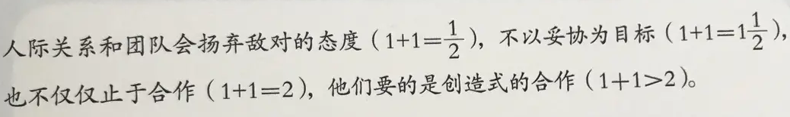

高效能人士的七个习惯
Contents

积极主动
即采取主动，为自己过去、现在及未来的行为负责，积极主动摒弃了被动受害者的角色，不怨天尤人，发挥人类四项独特的禀赋——自觉、良知、想象力及自主意志。
以始为终
所有事物都经过两次的创造，先是在脑海里酝酿，其次才是实质的创造。
要事第一
即实质的创造，是梦想【你的目标、愿景、价值观及要事处理顺序】的组织与实践。记住，必要的事不必摆在第一，要事也不能放在第二。
双赢思维
是一种基于互敬、寻求互惠的思考框架与心意，目的是分享更多的机会、财富及资源，而非敌对式竞争。
知彼解己。
当我们舍弃回答心，改以了解心去聆听别人，便能开启真正的沟通，增进彼此关系。对方获得了解后，会觉得受到尊重与认可，进而卸下以防，坦然而谈，双方对彼此的了解也更流畅自然。知彼需仁慈心，解已需要勇气，能平衡两者，则可大幅提升沟通的效率。
统合综效。
统合综效谈的是创造第三种选择——即非按照我的方式，亦非遵循你的方式，而是第三种远胜过个人之见的办法。它是互相尊重的成果——不但是了解彼此，甚至是称许彼此的差异，欣赏对方解决问题及掌握机会手法。个人的力量是团队和家庭统合综效的利基，能使整体获得一加一大于二 的成效。实践统合综效的人际关系和团队摒弃敌对的态度，不以妥协为目标，也不仅止于合作，他们要的是创造式的合作。

不断更新
”不断更新“谈的是，如何在四个基本生活面向（身体、精神、智力、社会/情感）中，不断更新自己。这个习惯提升了其他六个习惯的实施效率。对组织而言，习惯七提供了愿景、更新及不断的改善，使组织不致呈现老化疲态，并迈向新的成长之径。对家庭而言，习惯七透过固定的个人及家庭活动，使家庭效能升级，就像建立传统，使家庭日新月异，即是一例。
人的行为总是一再重复，因此卓越不是一时的行为，而是习惯。俗话讲，思想决定行动，行动决定习惯，习惯决定品德，品德决定命运。
Author nanshusu
LastMod 2021-08-26